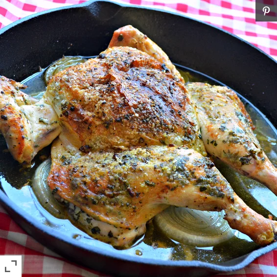
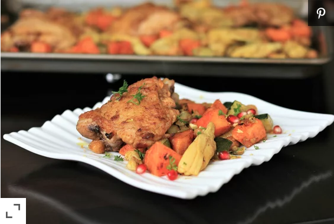
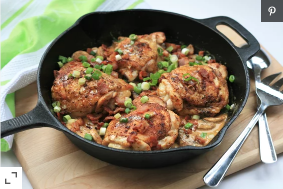

CHICKEN RECIPES
1. QUICK CHICKEN PICCATA

These quick and easy pan-fried chicken breasts are topped with a simple pan sauce made with capers, butter, white wine, and lemon juice.
view recipe
2. CHIMICHURRI BAKED CHICKEN

Chimichurri is a dish from Argentina that is usually served over grilled chicken or steak. This is my version, which may or may not be authentic.
view recipe
3.MOROCCAN CHICKEN THIGH SHEET PAN DINNER

This Moroccan-inspired sheet pan dinner is packed with bold sweet and savory flavors and palate-pleasing textures. This is perfect for quick weeknight dinners or laid-back dinner parties. Ras el hanout is a North African seasoning available in specialty grocery stores, or if you'd like to make your own, there are many recipes available online.
view recipe
4.KETO SMOTHERED CHICKEN THIGHS

Topped with bacon, mushrooms, green onions, and a creamy sauce, these chicken thighs are sure to become a favorite on your keto menu.
view recipe